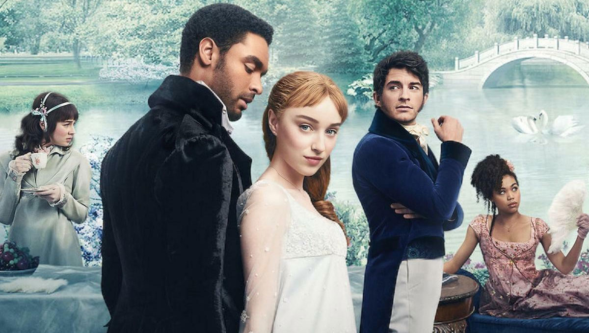
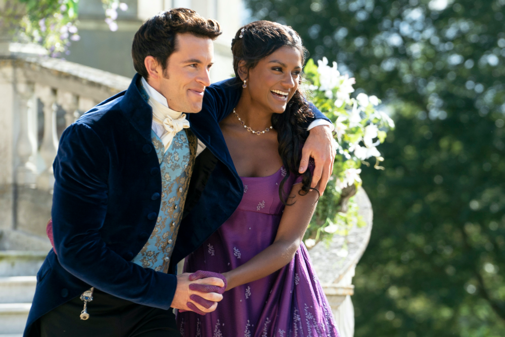
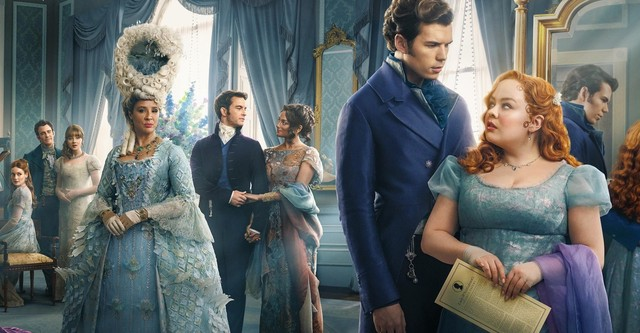

Il drama racconta la storia di Daphne (Phoebe Dynevor, Younger),
la figlia maggiore della potente famiglia Bridgerton, e del suo debutto nel
competitivo mercato matrimoniale londinese nell'età della Reggenza.

Stagione 2
La seconda stagione di Bridgerton segue le vicende romantiche di Lord Anthony Bridgerton (Jonathan Bailey),
maggiore dei fratelli Bridgerton, e il suo desiderio di tenere alto il prestigioso nome di famiglia.

Stagione 3
Parla della storia d'amore di Colin e Penelope. Che vede Penelope rinunciare alla sua cotta per Colin.
Ha infatti deciso che è arrivato il momento di prendere marito. Preferibilmente uno che
le garantisca sufficiente indipendenza
per continuare la sua doppia vita come Lady Whistledown.

Video e Trailer
Guarda i nostri video e trailer di Bridgerton. Scopri di più sul mondo affascinante della serie e sui personaggi che ami.